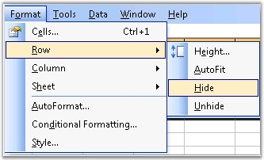
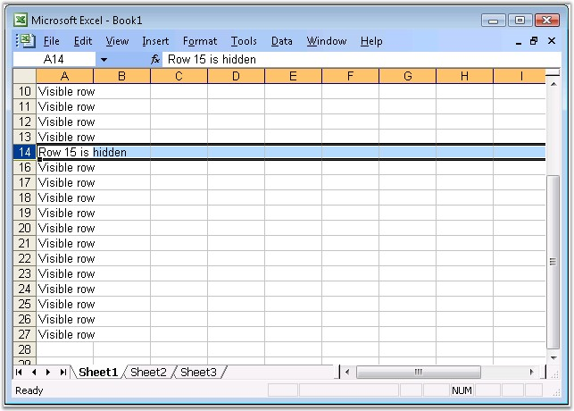
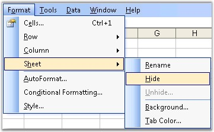
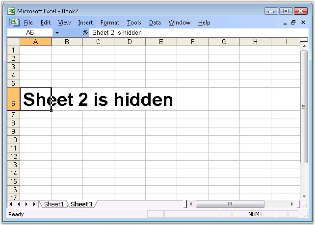

Controlling the visibility of a cell is one of the most useful features in MS Excel. It allows to show/hide the rows and columns according to the needs of the user, and produce fairly readable content, when there is large data in the worksheet.
Following section explains the support provided by XlsIO to hide/unhide sheets and rows/columns.
Excel allows to hide a row/column by using the Hide command, but a row or column also becomes hidden when you change its row height or column width to zero. Also, you can show a hidden row/column by using the Unhide command.

Figure 65: Hiding a row
Hiding and Unhiding Rows in XlsIO
XlsIO provides support for hiding/unhiding rows and columns. This can be done by using ShowRow and ShowColumn methods.
|
[C#]
// Hiding the First Column and Second Row. sheet.ShowColumn( 1, false ); sheet.ShowRow( 2, false );
// Hiding the Fifth Column and Fifth Row. sheet.ShowColumn( 5, false ); sheet.ShowRow( 5, false );
// Unhiding the Fifth Column and Second Row. sheet.ShowColumn( 5, true ); sheet.ShowRow( 2, true ); |
|
[VB.NET]
' Hiding the First Column and Second Row. sheet.ShowColumn(1, False) sheet.ShowRow(2, False)
' Hiding the Fifth Column and Fifth Row. sheet.ShowColumn(5, False) sheet.ShowRow(5, False)
' Unhiding the Fifth Column and Second Row. sheet.ShowColumn(5, True) sheet.ShowRow(2, True) |

Figure 66: Worksheet with a hidden row
XlsIO also provides options to provide focus to a particular row/column, when it is opened by using the TopVisibleRow and LeftVisibleColumn properties respectively.
|
[C#]
//Scrolls to 40th row sheet.TopVisibleRow = 40;
//Scrolls to 7 column when opening sheet.LeftVisibleColumn = 7; |
|
[VB.NET]
'Scrolls to 40th row sheet.TopVisibleRow = 40
'Scrolls to 7 column when opening sheet.LeftVisibleColumn = 7 |
This is especially useful, when the spreadsheet has large number of records, and the user wants to view a particular row/column that has some details, without scrolling to that row/column after opening it. Note that these row and column indexes are "one based".
Excel has the sheet tab bar that appears at the bottom of the screen with tab scrolling buttons displayed on the left side. Excel provides an option to show/hide a sheet from the user view. This is done by selecting the "Hide" item in the context menu of the sheet.

Figure 67: Hiding a Worksheet
Hiding and Unhiding a Worksheet in XlsIO
XlsIO also allows to hide/unhide worksheets by using the Visibility property. Following APIs are used to hide/unhide worksheets.
|
[C#]
sheet.Visibility = WorksheetVisibility.Hidden; |
|
[VB.NET]
sheet.Visibility = WorksheetVisibility.Hidden |

Figure 68: Hidden Worksheet
You can also hide all the tabs in the worksheet by using the DisplayWorkbookTabs option in the IWorkbook.
XlsIO also provides an option to activate a worksheet, while opening it in the workbook, which is equivalent to clicking a worksheet in MS Excel. This is done by using the Activate method.
|
[C#]
sheet.Activate(); |
|
[VB.NET]
sheet.Activate() |
Hiding and Unhiding Rows in XlsIO
XlsIO provides support for hiding/unhiding rows and columns. This can be done by using ShowRow, ShowColumn and ShowRange methods as shown in the following code snippet:
|
[C#]
// Hiding the First Column and Second Row. sheet.ShowColumn( 1, false ); sheet.ShowRow( 2, false );
// Hiding the Fifth Column and Fifth Row. sheet.ShowColumn( 5, false ); sheet.ShowRow( 5, false );
// Unhiding the Fifth Column and Second Row. sheet.ShowColumn( 5, true ); sheet.ShowRow( 2, true );
IRange range = sheet[1, 4]; //Hiding the first to thrid row and first to thrid column sheet.ShowRange(range, false);
IRange firstRange = ws[1, 1,3,3]; IRange secondRange = ws[5, 5, 7, 7]; RangesCollection rangeCollection = new RangesCollection(app, ws); rangCollection.Add(firstRange); rangeCollection.Add(secondRange); //Hiding the collection of ranges ws.ShowRange(rangeCollection, false); |
|
[VB.NET]
'Hiding the First Column and Second Row. sheet.ShowColumn(1, False) sheet.ShowRow(2, False)
'Hiding the Fifth Column and Fifth Row. sheet.ShowColumn(5, False) sheet.ShowRow(5, False)
'Unhiding the Fifth Column and Second Row. sheet.ShowColumn(5, True) sheet.ShowRow(2, True)
IRange range = sheet[1, 4]; //Hiding the first to thrid row and first to thrid column sheet.ShowRange(range, false);
IRange firstRange = ws[1, 1,3,3]; IRange secondRange = ws[5, 5, 7, 7]; RangesCollection rangeCollection = new RangesCollection(app, ws); rangCollection.Add(firstRange); rangeCollection.Add(secondRange); //Hiding the collection of ranges ws.ShowRange(rangeCollection, false); |
Methods
|
Prototype |
Description |
|
ShowRange (IRange, bool) |
Shows or hides a particular range
|
|
ShowRange(IRange[], bool) |
Shows or hides a particular array of ranges |
|
ShowRange( RasngesCollection, bool) |
Shows or hides a particular collection of ranges |